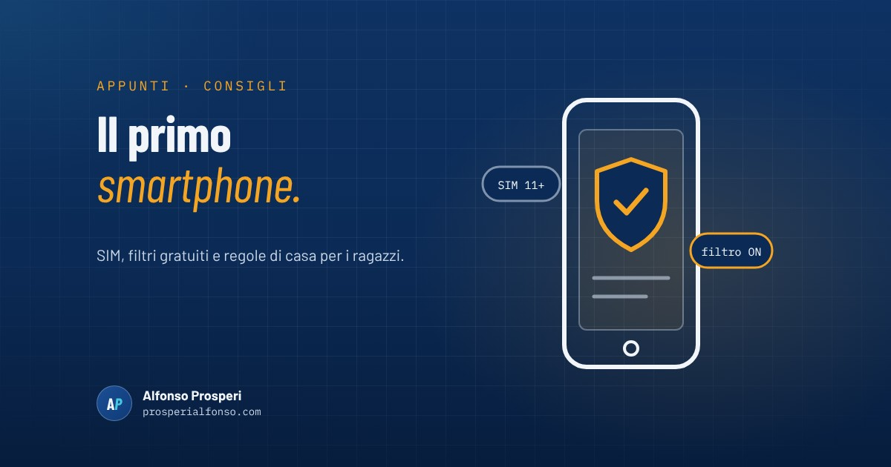

Prima o poi arriva la domanda: "posso avere il telefono?". Il primo smartphone apre ai ragazzi un mondo utile e divertente, ma senza filtri. La buona notizia è che oggi ci sono più strumenti di qualche anno fa per proteggerli, a partire dalla SIM.
La SIM intestata (o associata) al minore
Dal 21 novembre 2023, per una delibera dell'AGCOM, tutti gli operatori devono offrire gratis un sistema di controllo parentale sulla rete mobile e devono attivarlo in automatico sulle SIM usate da minorenni. Il filtro blocca categorie di siti come quelli per adulti, il gioco d'azzardo, la violenza e le armi.
Perché funzioni, al momento dell'attivazione bisogna dichiarare che l'utilizzatore della SIM è il figlio minorenne, anche se l'intestatario del contratto è il genitore. Se la SIM è già attiva, si può chiedere all'operatore di aggiornare i dati o attivare il filtro dalla sua app. Solo il titolare può disattivarlo o modificarlo.
Il limite da conoscere
Il filtro dell'operatore funziona solo quando il telefono usa la rete mobile. Appena si collega al Wi-Fi di casa o degli amici, non vale più. Per questo serve anche un controllo sul telefono stesso:
- su Android con Google Family Link;
- su iPhone con In famiglia e Tempo di utilizzo.
Permettono di approvare le app da installare, impostare orari e limiti giornalieri e vedere dove si trova il telefono. Ne parlo nella guida al parental control.
Come scegliere l'offerta
Le offerte cambiano spesso, quindi più che il nome conviene guardare alcuni criteri:
- Giga e minuti adatti all'età: per un ragazzo di 11-12 anni non servono quantità enormi.
- Nessun vincolo lungo e costi di attivazione chiari.
- App di controllo inclusa o compatibile, se l'operatore la offre.
- Blocco dei servizi a pagamento: chiedi all'operatore di disattivare i servizi in abbonamento a sovrapprezzo, per evitare addebiti a sorpresa.
Le regole valgono più delle app
Nessun filtro è perfetto. Funziona meglio un patto chiaro in famiglia: dove si usa il telefono (non a tavola, non in camera la notte), quanto tempo al giorno, cosa fare se arriva un messaggio strano o una richiesta da uno sconosciuto. E la regola più importante: se succede qualcosa, se ne parla, senza paura di perdere il telefono.